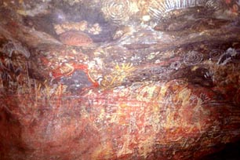
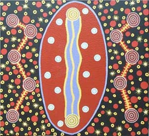
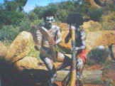
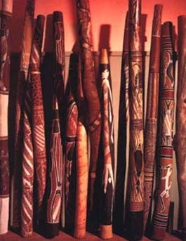
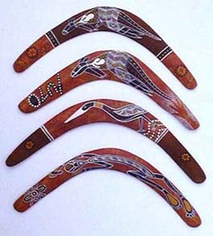
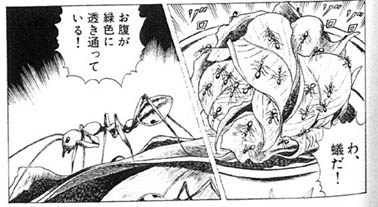
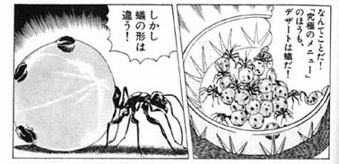
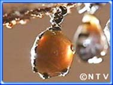
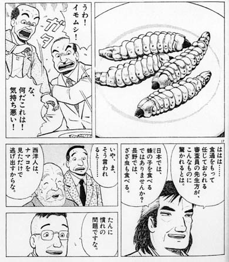

|
第一章 アボリジニーと神秘的な世界   図６：エアーズロックに残される壁画 図７：絵葉書で見られるｱﾎﾞﾘｼﾞﾆｰｱｰﾄ またアボリジニーは神に祈るための儀式のために踊りと音楽を持ってい る。踊りにはカンガルーのしぐさを真似る「カンガルーダンス」という面 白い踊りもある。その歌や踊りに使われている楽器がディジュリドゥーで ある。これは長さ１～２ｍで内部がターマイトというシロアリが食べてし まい、すでに枯死した木を使っている木の笛だ。アボリジニーはこれを鼻 から吸い続けながら口から吐き続けて演奏するという高度な技術を要して いる。コツをつかんでかなり練習しないと演奏できない難しい楽器だ。デ ィジュリドゥーの表面にはアボリジニーアートが描かれていて売られてい るものもある。 図８：ディジュリドゥーを演奏するアボリジニー 図９：ディジュリドゥー   図１０：ブーメラン  武器としては、ブーメラン、スピアー（槍）などがある。原住民のブー メランには二種類ある。ひとつは投げたところに戻ってくるもので、競技 や鳥を木と木の間に仕掛けたワナの中に押し入れるために使われる。戻っ てくるブーメランは、間の角度が１００度くらいで全長５０ｃｍから６０ ｃｍくらいだ。両端は２、３度曲がっていてブーメランを垂直に、凸面を 手前に投げる。ブーメランは１８～２７ｍまっすぐに飛び、その後は左に 高く上に上がり戻ってくる。この戻ってくるブーメランはアメリカのイン ディアンを始めとする原住民が使っていたが、発明したのはアボリジニー と言われている。もうひとつは戻ってこないもので、重くまっすぐにでき ている。これは鳥やカンガルー、爬虫類などを殺すときに使われる。では次にアボリジニーはどのような食生活をしていたのだろうか？アボ リジニーが４万年とも５万年とも言われる歳月をかけて培ってきた食文化 をブッシュフードという。ブッシュフードとはオーストラリア大陸特有の カンガルーやクロコダイル、ゴアナ（オオトカゲ）を始めとする野生動物、 天然ハーブ、野菜、魚介類を使ったアボリジニー特有の食文化をさす。最 近ではその価値が見直され、高級レストランや高級ホテルでブッシュフー ドの素材が大陸独自の味として使われている。その中でもカンガルー料理 は肉質の良さ低脂肪・低コレステロール・高蛋白というヘルシーな要素に 加え、洗練されたレシピによる料理としての完成度の高さが多くのグルメ を魅了している。それはオーストラリアだけではなく、フレンチ、中華、 和食などのアジアンテイストまで広がり、将来オーストラリアを代表する 伝統料理としての世界的地位を築きつつあるほどだ。 日本で人気のあるグルメ漫画「美味しんぼ」（小学館）でもその豊かな アボリジニーの食文化ブッシュフードを取り上げている。そこでは植物の 根についているブッシュ･アップルという実や、亀を捕まえて料理する様子 などが掲載されている。そして私たちが聞いて一番驚くべき食材と言える のは、アリやイモムシだろう。アリも一種類だけではない。グリーンアン トというアリは、腹の部分を食べるとすっぱい味がする。このアリの腹が 緑色なのは、アリが木の葉を食べて蓄えた葉緑素の色で、この液には大量 のビタミンＣが含まれている。アボリジニーはこのアリを食べることによ って、ビタミンＣを補給していたのだ。もうひとつ紹介されているのは、 蜜アリだ。蜜アリは働きアリが集めた蜜を食べ、巣の仲間のために自分の 体を貯蔵庫にして蜜を保管する。食べられるイモムシとしてはウィチェッ テイ・グラブというコウモリ蛾の幼虫があり、これは軽く火にあぶるって 食べるとジューシーなピーナッツといった感じだそうだ。前章でも述べた が、このようにアボリジニーはオーストラリアの大地の自然を知り尽くし た食文化がある。こうした食文化は４万年～5万年の時間をかけて築かれて きたのだ。 図１１：グリーンアント  図１２：蜜アリ   図１３：ウィチェッテイ・グラブ  ＊「美味しんぼ」（小学館）37巻「激突アボリジニー料理！！」と59巻 「対決再開！オーストラリア」より |